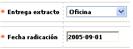

Novedad entrega extracto
Este formulario invocado desde la opción ingreso de novedades, (issuer) le permite a la entidad ofrecer al cliente la posibilidad de cambiar el sitio de entrega del extracto de su tarjeta, bien sea en la oficina a través de la que se gestionó la tarjeta, la dirección de correspondencia o un punto de entrega.

Descripción de campos
Entrega extracto |
Campo tipo combo, obligatorio, en el cual se puede seleccionar entre Punto de entrega, Oficina o Dirección, el sitio para la entrega del extracto acorde con lo solicitado por el cliente. |
Fecha de radicación |
Campo obligatorio en el que se registra en formato YYYY-MM-DD la fecha en la cual el cliente solicitó el cambio del sitio de entrega del extracto y que puede ser una fecha anterior a la actual del sistema, facilitando el ingreso de novedades de fechas anteriores. |